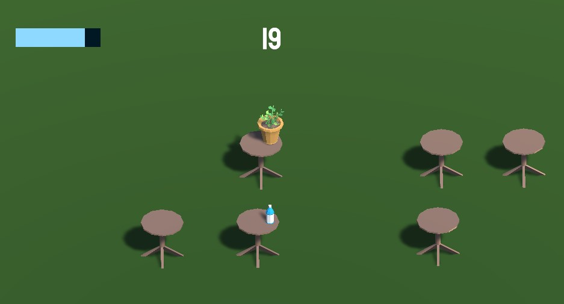

Este es un videojuego corto e inacabado, realizado como ejemplo para un
curso de Desarrollo de Videojuegos que dicté en 2021, en el cuál se
buscaba implementar en un entorno 3D una mecánica básica de saltar y
recoger objetos, durando el mayor tiempo posible.
La capa estética agrega un sentido narrativo a esta mecánica, ya que
hace que las reglas de juego que ponen en marcha el funcionamiento del
mismo, las cuales en principio sirven para determinar las posibles
acciones del jugador y sus consecuencias, adquieran una relevancia
narrativa. Es decir, hay una razón para evitar tocar el suelo (la planta
se deshidrata más rápido), así como hay una razón para recolectar el
agua (mantenerse hidratada). De esta manera, estética, narrativa y
mecánica, se complementan entre sí para configurar un objetivo claro
para el jugador, que va más allá de la mera agilidad, ya que contribuyen
a una mayor inmersión desde el reconocimiento de una situación concreta.
Agua pa' la planta se puede jugar
aquí.
